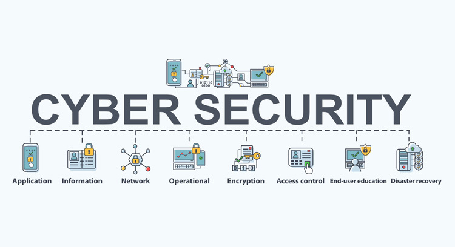
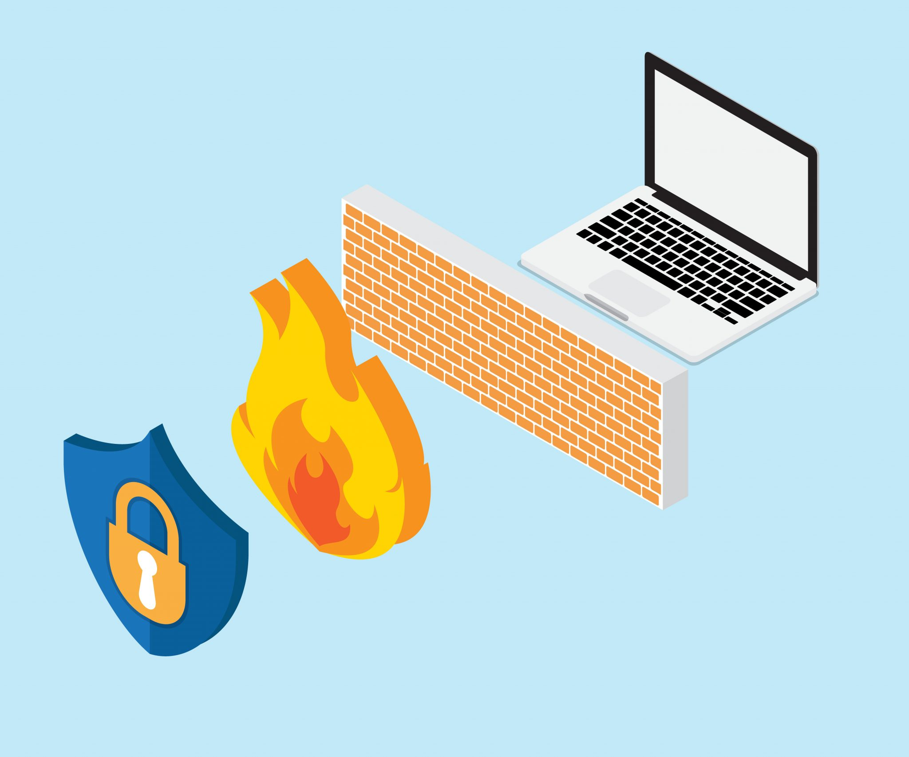

Mengapa Cyber Security itu Penting ?
Cyber security adalah teknologi, proses dan praktik yang dirancang untuk melindungi jaringan, komputer, program dan data dari serangan, kerusakan atau akses yang tidak sah. Cyber security juga disebut sebagai upaya untuk melindungi informasi dari adanya cyber attack. Cyber attack dalam operasi informasi adalah semua jenis tindakan yang sengaja dilakukan untuk mengganggu kerahasiaan (confidentiality), integritas (integrity), dan ketersedian (availability) informasi. Semua Perusahaan yang bertransformasi dari data berbasis digital sangat dianjurkan untuk memperhatikan dan menggunakan cyber security dalam menyimpan, mengakses dan mengambil informasi penting. Melindungi informasi dan data merupakan kebutuhan sebagian besar perusahaan dan instansi pemerintah di seluruh dunia karena data merupakan aset berharga dari suatu perusahaan dan bisa menjadi masalah di kemudian hari apabila data tersebut jatuh ke tangan orang yang tidak berhak. Semua Perusahaan yang bertransformasi dari data berbasis digital sangat dianjurkan untuk memperhatikan dan menggunakan cyber security dalam menyimpan, mengakses dan mengambil informasi penting. Melindungi informasi dan data merupakan kebutuhan sebagian besar perusahaan dan instansi pemerintah di seluruh dunia karena data merupakan aset berharga dari suatu perusahaan dan bisa menjadi masalah di kemudian hari apabila data tersebut jatuh ke tangan orang yang tidak berhak.
Apa saja penggunaan istilah cyber yang ada di Indonesia?
- Cyber Law
- Cyber Security
- Cyber Crime
- Cyber War
- Cyber Attack
Merupakan aspek hukum yang ruang lingkupnya meliputi setiap aspek yang berhubungan dengan orang perorangan atau subyek hukum yang menggunakan dan memanfaatkan teknologi internet yang dimulai pada saat mulai online dan memasuki dunia cyber ataumaya. Payung hukum Cyber Law di Indonesia mengacu ke Undang Undang Nomor 11 Tahun 2008 tentang Informasi dan Transaksi Elektronik.
Merupakan teknologi, proses dan praktik yang dirancang untuk melindungi jaringan, komputer, program dan data dari serangan, kerusakan atau akses yang tidak sah.
Merupakan aktivitas kejahatan dengan komputer atau jaringan komputer menjadi alat, sasaran atau tempat terjadinya kejahatan di dunia maya.
Merupakan perang yang terjadi di dalam dunia internet (maya). Perang tersebut bersenjatakan koneksi internet dan juga komputer. Aktivitas yang terjadi pada cyber war pada umumnya adalah kegiatan hacking dan anti-hacking yang dilakukan secara (resmi) oleh negara. Tujuannya mulai dari mencuri data hingga melumpuhkan sistem yang dimiliki oleh negara musuh.
Merupakan jenis manuver yang digunakan oleh negara-negara, individu, kelompok, atau organisasi yang menargetkan sistem informasi komputer, infrastruktur, jaringan komputer, dan/atau perangkat komputer pribadi dengan berbagai cara tindakan berbahaya yang biasanya berasal dari sumber anonim yang mencuri, mengubah, atau menghancurkan target yang ditentukan dengan cara meretas sistem yang rentan.
Apa saja jenis serangan cyber di era digital ini ?
Jenis serangan cyber di era digital ini diantaranya:
- Denial of Service
- Malware dan Virus
- Botnet dan Zombie
- Scareware
Merupakan serangan memanipulasi sistem, jaringan, maupun aplikasi sehingga kinerjanya menjadi sangat berat dan menguras daya. Ketika sistem perusahaan terkena serangan tersebut, peretas biasanya akan menuntut uang tebusan kalau ingin mengembalikan ke kondisi semula.
Merupakan program jahat yang sengaja disusupkan, biasanya tersebar melalui e-mail, website mencurigakan, maupun perangkat keras yang dihubungkan ke dalam piranti sistem perusahaan. Virus yang masuk akan merusak data yang ada sesuai dengan tujuan pembuatannya, ada yang sekadar menyembunyikan data, tetapi ada pula yang sampai merusak maupun menghapusnya.
Merupakan serangan komputer yang terhubung ke jaringan tersentral. Efek botnets umum disebut sebagai zombies karena keberadaannya sudah di bawah kendali peretas. Botnet yang dibuat untuk mencuri data nantinya akan terus meningkatkan kemampuan enkripsinya sehingga sulit untuk dideteksi.
Merupakan salah satu tipe tipuan (scam) yang biasa digunakan oleh penjahat siber untuk mengecoh pengguna perangkat karena bentuknya yang seperti pop-up peringatan dari sistem. Ketika sudah berhasil dijebak, pengguna biasa diarahkan untuk melakukan tindakan tertentu yang ujung-ujungnya adalah penipuan.
Apa manfaat Cyber Security ?
Manfaat dari cyber security yaitu untuk menjaga dan mencegah penyalahgunaan akses maupun pemanfaatan data dalam sistem Teknologi Informasi dari seseorang yang tidak memiliki hak untuk mengakses maupun memanfaatkan data dalam sistem tersebut. Selain itu, dengan adanya cyber security, reputasi dari perusahaan tetap terjaga, khususnya yang berhubungan dengan pihak pengguna jasa perusahaan tersebut.
Popular Post
Bagaimana Cara Untuk Melindungi Data Pribadi Anda?
Berbagai aplikasi baik fintech, e-commerce, serta berbagai platform digital lainnya selalu memerlukan data pribadi pengguna. Apabila tidak berhati-hati, maka para penjahat digital dengan mudah akan menyalahgunakan data tersebut.
Seberapa Pentingnya Firewall?
Firewall. Mungkin Anda mengingatnya hanya sebagai salah satu opsi pengaturan di komputer. Lengkap dengan ikon bola dunia yang ditutupi tembok bata berwarna merah. Di balik ikon yang mudah diingat ini, ternyata firewall memiliki fungsi yang tak kalah penting.
Categories
Personal Info